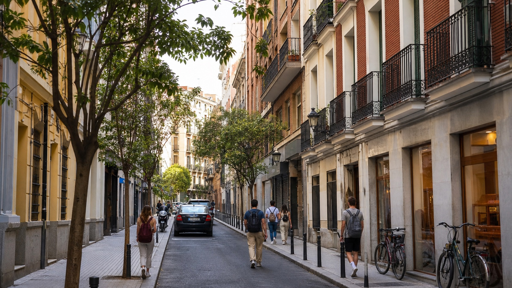

Moncloa e Argüelles
Molto richiesti da studenti UCM e UPM. Comodi, universitari, pieni di servizi e ben collegati. Prezzi spesso medio-alti, ma risparmi tempo negli spostamenti.
Alloggi Erasmus Madrid
La casa e' spesso la scelta piu' delicata dell'Erasmus a Madrid. Il mercato e' veloce, i prezzi cambiano molto per quartiere e periodo, e conviene arrivare con criteri chiari.

Inizia dal campus, non dal quartiere piu' famoso. Se studi alla Complutense o alla Politecnica in zona Moncloa, abitare a Argüelles o Chamberi puo' ridurre molto gli spostamenti. Se vai alla Carlos III, Getafe o Leganes possono essere piu' sensati del centro.
Le stanze migliori si muovono rapidamente tra maggio-luglio per il primo semestre e tra novembre-gennaio per il secondo. Prepara una breve presentazione in spagnolo o inglese con durata del soggiorno, universita', budget e data di arrivo.
Migliori quartieri per studenti a Madrid
Non esiste il quartiere perfetto per tutti: il punto giusto e' quello che bilancia prezzo, tragitto, sicurezza percepita e vita quotidiana.
Molto richiesti da studenti UCM e UPM. Comodi, universitari, pieni di servizi e ben collegati. Prezzi spesso medio-alti, ma risparmi tempo negli spostamenti.
Ordinato, centrale e ben servito. Buono per chi vuole un quartiere vivibile senza essere nel cuore della movida. Stanza spesso piu' cara rispetto a zone periferiche.
Vita sociale intensa, locali, cultura e molta domanda. Ottimi se cerchi centralita', meno se hai bisogno di silenzio o budget contenuto.
Multiculturali, centrali e con molti eventi. Possono offrire buone opportunita', ma conviene visitare la via specifica e controllare rumore e stato dell'appartamento.
Interessanti per risparmiare qualcosa restando connessi. Buoni collegamenti verso centro, Moncloa e nord della citta'. Qualita' degli alloggi molto variabile.
Da considerare se il campus e' fuori dal centro, soprattutto per UC3M o URJC. Spesso piu' pratici e convenienti di un tragitto quotidiano lungo dal centro.
Prezzi indicativi
Le fasce sotto sono utili per orientarsi nel 2026, ma vanno verificate sul periodo esatto, sulla durata del contratto e sulle condizioni dell'appartamento.
| Soluzione | Fascia mensile indicativa | Quando conviene | Da controllare |
|---|---|---|---|
| Stanza in appartamento condiviso | 500-800 € | Scelta piu' comune per Erasmus a Madrid. | Bollette incluse, numero coinquilini, finestre, riscaldamento, contratto. |
| Stanza in residenza privata | 750-1.200 € | Se vuoi servizi, pulizia, eventi e procedure piu' semplici. | Cauzione, pasti inclusi, regole ospiti, distanza dal campus. |
| Monolocale o studio | 900-1.400 € | Se cerchi privacy e hai budget alto. | Spese extra, durata minima, agenzia, arredamento reale. |
| Zona fuori centro vicina al campus | 420-650 € | Se studi a Getafe, Leganes, Mostoles o campus periferici. | Frequenza dei collegamenti serali e servizi nel quartiere. |
Per stimare il budget completo consulta anche la pagina costo della vita a Madrid.